古代起源 · 蒙古包
地毯、木地板、炉具、奶茶器皿与马头琴共同构成生活场景。通过抓取与邻近讲解，将风俗知识联系到可以靠近和观察的物品。
VR / 数字展陈 · 2025

项目以“毡帐、摇篮与绿洲”为叙事线索，在 UE5 中构建面向 PICO 4 的蒙古族文化虚拟展馆。参观者从蒙古包中的日常器物出发，经过列车与当代展厅，走向以库布齐生态治理为主题的空间，在行走、抓握、观看与聆听中理解文化及地域发展的联系。
前期整理围绕风俗、器物、历史文化与未来发展展开，并通过访谈了解年轻参观者和数字媒体学习者的观看习惯。反馈提到清晰路线、自然操作和分层信息，也表达了“进入蒙古包体验生活”而不只观看文字与图片的期待。
据此，项目把熟悉的蒙古包、马头琴等符号放回具体场景：先接触物件和环境，再获得与当前对象相关的介绍，最后通过空间转换延伸到社会变化与生态议题。
地毯、木地板、炉具、奶茶器皿与马头琴共同构成生活场景。通过抓取与邻近讲解，将风俗知识联系到可以靠近和观察的物品。
以旧式座椅、行李、狭长通道和窗外运动营造旅途感，让空间移动承担迁徙、交流与时代变化的叙事过渡。
人物、雕塑与展板围绕视频墙展开，通过六个独立视频入口选择《国家的孩子》相关影像，将观看顺序交给参观者。
以戈壁岩壁、治沙影像、光伏与绿色能源内容连接生态治理主题，通过行进中的位置触发讲解，使信息与所处环境对应。
模型制作从 3ds Max 的结构搭建开始，再用 ZBrush 补充细节，经过低模整理、UV 展开与贴图制作，将高模细节烘焙到适合实时场景的资产上。马头琴重点处理琴头、琴颈、共鸣箱与琴弦的结构关系；蒙古包则围绕木构、家具和生活用品组织空间。
服饰部分使用 Marvelous Designer 推敲布料轮廓，再在 ZBrush 中补充褶皱与边缘细节。制作时关注轮廓、材质和器物之间的关系，使它们在头显中的观看距离下仍具有清楚的特征。
蒙古包采用暖色局部光与天光，强调生活气息；列车降低环境亮度，以旧材质和纵深阴影形成过渡。当代展厅转向低饱和冷灰色，用聚光灯强调雕塑与影像；生态空间以红橙色岩壁、远处亮点和屏幕引导行进，让四个段落拥有不同的情绪与视觉焦点。
工程以 UE5 蓝图为主要实现方式，结合 VRExpansionPlugin、OpenXR 与 Enhanced Input 组织头显、手柄和交互输入。移动、物件抓握与展板操作共享连贯的参观流程。
左手摇杆按头显朝向控制前后与横向移动，头显和手柄保留真实空间跟踪；右手使用固定角度转向，兼顾虚拟移动与身体操作的可理解性。
手部附近的球形检测寻找可交互物体，确认 VRGripInterface 后调用抓握，松开时释放。将同类物件接入统一接口，减少逐个编写操作逻辑的重复工作。
六个入口分别对应媒体源。按钮触发 MediaPlayer 打开并播放内容，再通过 MediaTexture 与材质显示到屏幕上，让选择、播放与展示形成完整链路。
手柄上的 WidgetInteraction 用于操作三维 UMG 界面；物件讲解与位置触发补充上下文，让信息在参观者正在观看或接触对象时出现。
我参与文化、器物与生态资料研究，承担模型美术、关卡组织和部分交互实现，包括视频墙、语音触发与参观流程梳理。工作重点是把文化内容转化为空间中的对象、路径与反馈。
早期体验中，有参观者完成了操作，却没有把动作与文化内容联系起来。项目据此调整信息选择、讲解节奏与触发位置，使内容更贴近正在接触的对象。后续仍需观察参观者是否理解各段落的联系，以及能否在较少提示下完成路线。
点击图像放大查看，可使用左右方向键切换。
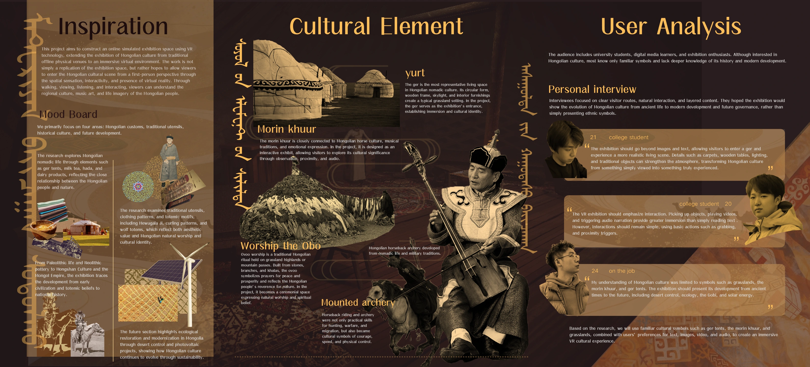
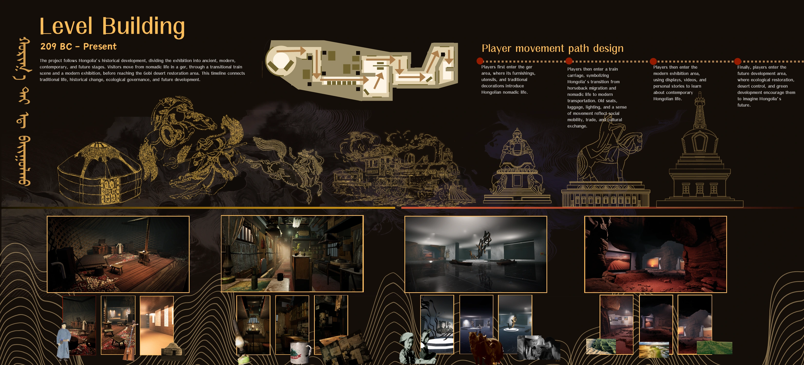
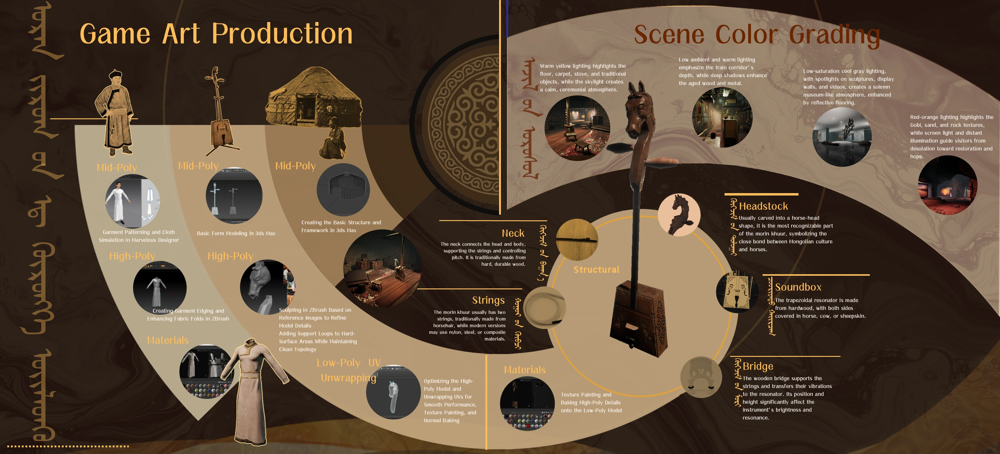
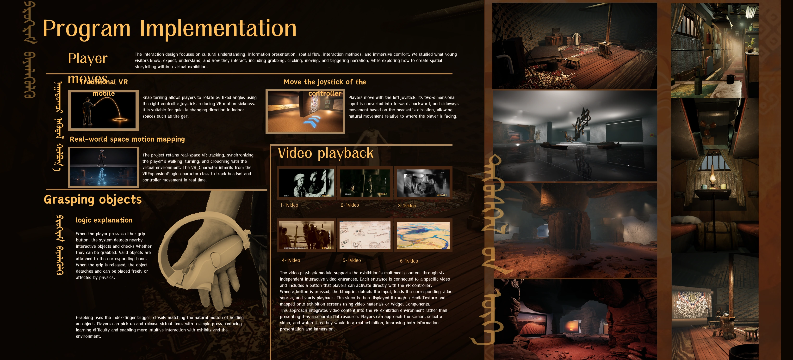

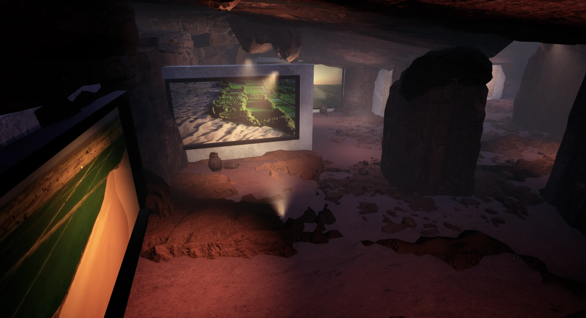
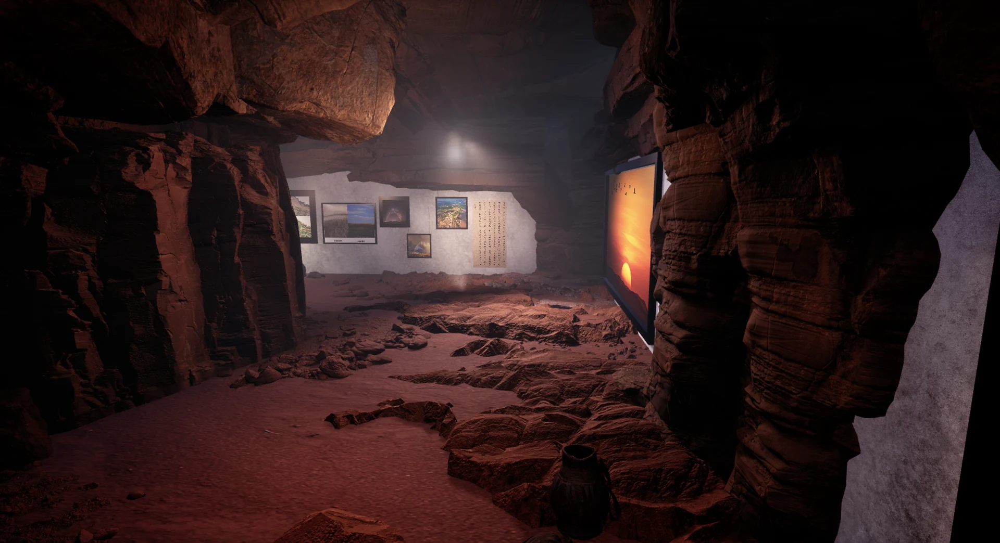
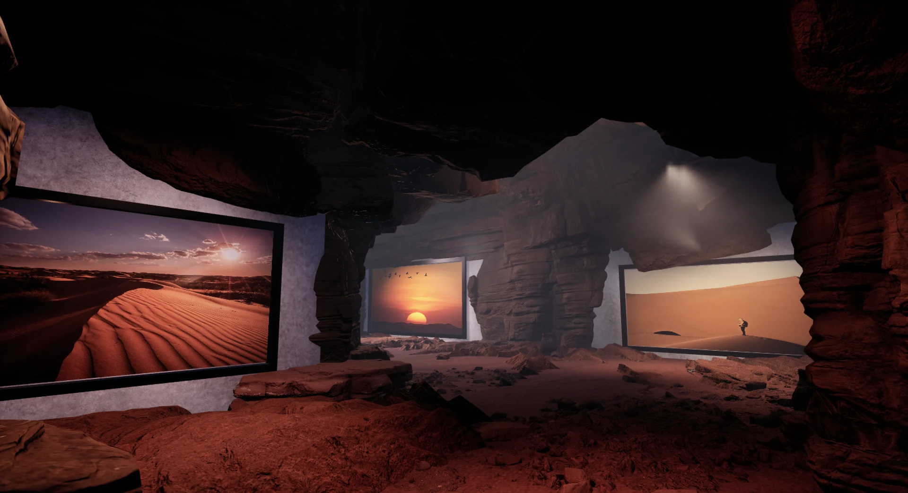
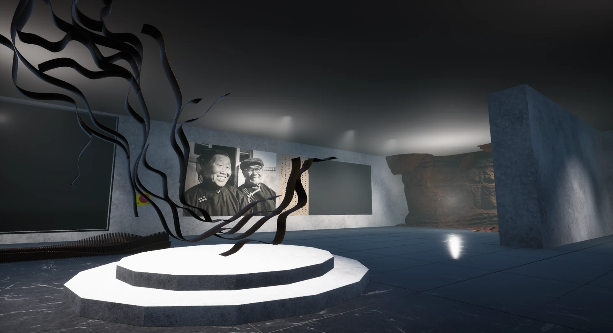
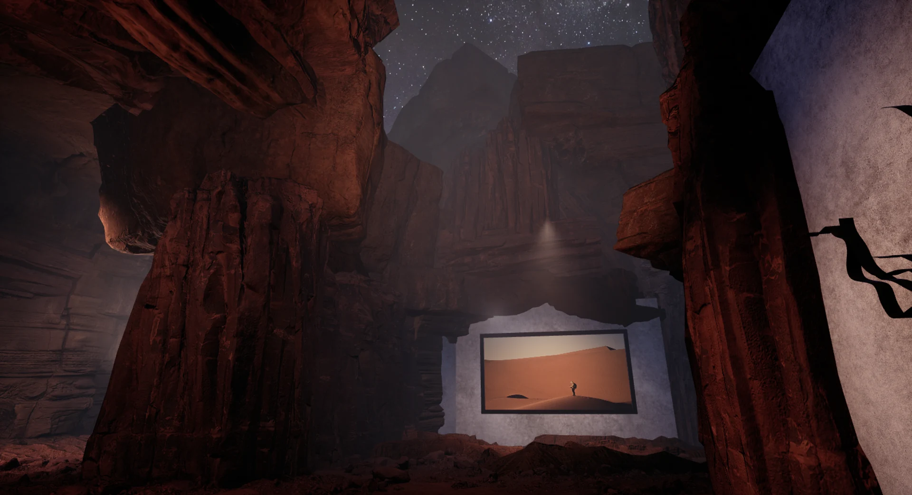
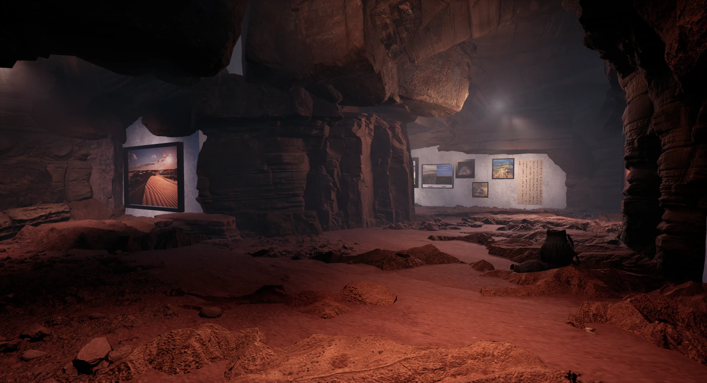
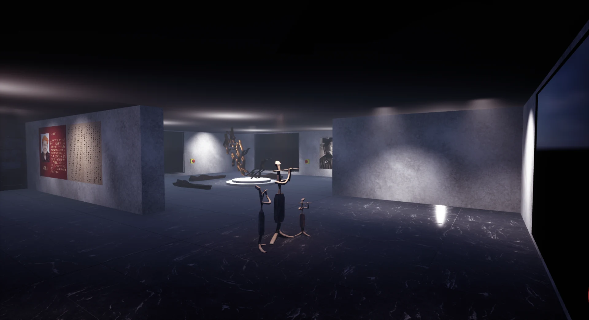
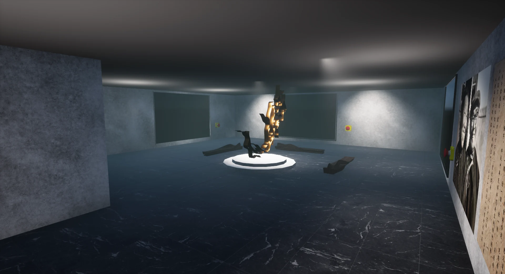
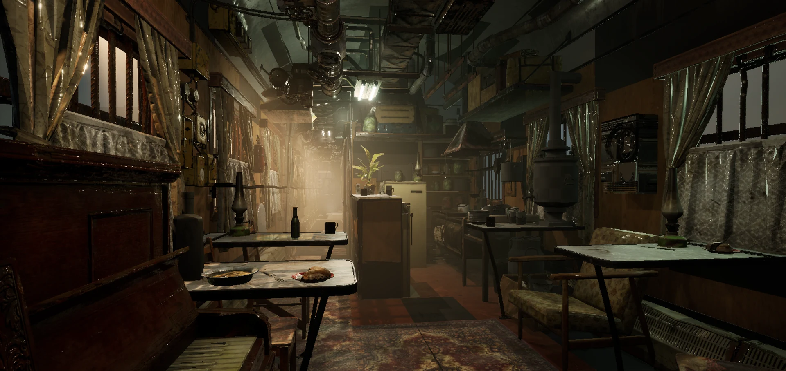
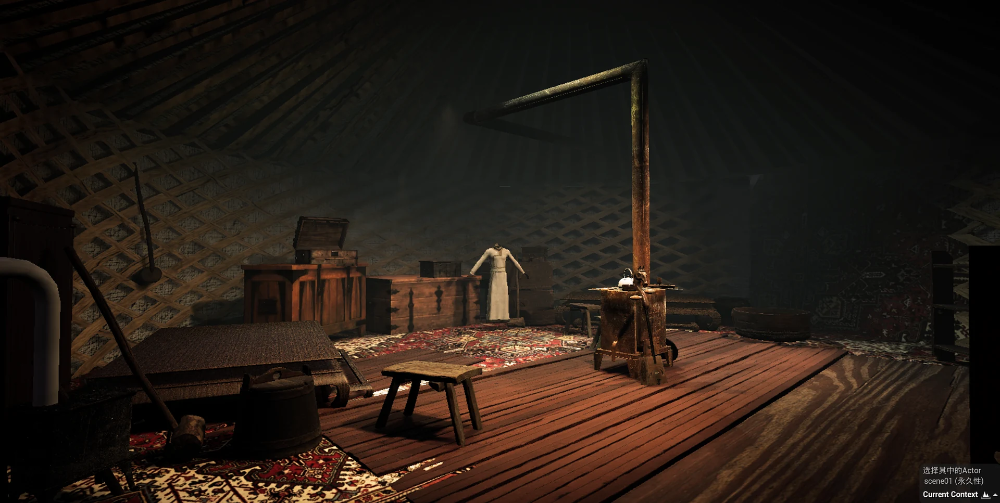